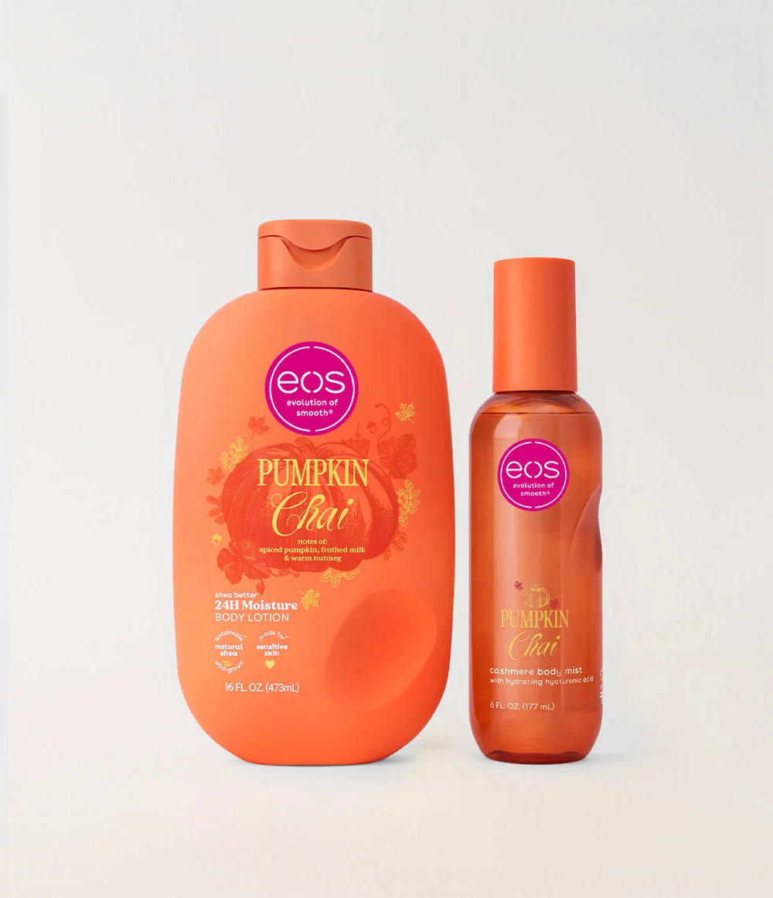

Why I Love Layering Lotions and Perfume Oils

Layering is one of my favourite ways to make a scent last longer. I like to start with a lotion that has a similar scent, then add a perfume oil on my pulse points, and finish with a light body spray. The lotion gives the oil something to cling to, so the fragrance stays with me through the day.
It also lets me create something that feels unique. Mixing a sweet scent with a woody or musky one can give a completely different result, and experimenting with combinations is half the fun. You never really know what you'll end up with until you try it.